Exorcist
Finds ghost funds in NEAR contracts, or proves there are none.
On NEAR, a cross-contract call can fail after a contract has already updated its ledger, and nothing rolls back. With NEP-141, the token then refunds the sender. Exorcist explores every receipt ordering and every failure up to a bound to find attacks like this, checks each attack trace in the Lean kernel, proves fixed contracts correct for all traces, and replays every trace against real Rust contracts in the NEAR sandbox.

sorry or native_decide; standard axioms onlyThe opening case: the Oct 2026 incident mechanism
This is a minimal model of the mechanism described in the NEAR Intents postmortem, written from scratch. It is not their contract. According to the postmortem, an attacker's contract deliberately failed deposit notifications; the token refunded each deposit while the ledger kept the credit; the resulting .8M of unbacked balances was withdrawn (summary of the postmortem; the funds were returned).
exorcist check incident-2026-10 finds the full exploit, deposit through to cash-out, without being told what to look for:
1. eve sends tx: token.ft_transfer_call(vault, 100, "notify hook") (+1 yocto)
ledger: alice=300 eve=0 (total 300) | tokens: vault=300 alice=0 eve=100
2. run #0 token.ft_transfer_call(vault, 100, "notify hook") ⇒ returns a promise
ledger: alice=300 eve=0 (total 300) | tokens: vault=400 alice=0 eve=0
3. run #1 vault.ft_on_transfer(eve, 100, "notify hook") ⇒ returns a promise
ledger: alice=300 eve=100 (total 400) | tokens: vault=400 alice=0 eve=0
4. FAIL #3 hook.on_deposit(eve, 100) ⇒ adversary makes it fail
ledger: alice=300 eve=100 (total 400) | tokens: vault=400 alice=0 eve=0
5. run #2 token.ft_resolve_transfer(eve, vault, 100) ⇒ ok, returns 0 — refunds 100 vault → eve
ledger: alice=300 eve=100 (total 400) | tokens: vault=300 alice=0 eve=100 ⚠ INSOLVENT (ledger > tokens held)
6. eve sends tx: vault.withdraw(100)
ledger: alice=300 eve=100 (total 400) | tokens: vault=300 alice=0 eve=100 ⚠ INSOLVENT (ledger > tokens held)
7. run #5 vault.withdraw(100) ⇒ ok (no value)
ledger: alice=300 eve=0 (total 300) | tokens: vault=300 alice=0 eve=100
8. run #6 token.ft_transfer(eve, 100) ⇒ ok (no value)
ledger: alice=300 eve=0 (total 300) | tokens: vault=200 alice=0 eve=200 ⚠ INSOLVENT (ledger > tokens held)
The trace is re-run and checked by the Lean kernel (decide). The fixed contract, which credits only after the notification has succeeded, is clean in 1,289,374 states and is proven solvent for every trace.
Results
| Model | Result | Label |
|---|---|---|
incident-2026-10 | attack found: eve cashes out 200 from a 100 deposit | depth 8 · 26,191 states |
incident-2026-10-fixed | solvent | proven for all traces |
deposit-vulnerable | insolvent after a failed notification | depth 5 · 444 states |
noreturn-vulnerable | insolvent with no failure at all (hook returns nothing) | depth 5 · 438 states |
withdraw-vulnerable | user funds stuck after a failed payout | depth 5 · 3,622 states |
deposit-fixed, noreturn-fixed, withdraw-fixed | no violation (1.04M / 0.84M / 11.2M states); solvent | bounded to depth 10 proven for all traces |
withdraw-fixed, noreturn-fixed | no stuck funds: tokens held = ledger whenever nothing is in flight. Assumes callbacks don't fail and no plain ft_transfer donations | proven for all traces (under those assumptions) |
withdraw-fixed-callback-fail | if callbacks may fail, funds get stuck (the token's resolve runs out of gas); solvency still holds | depth 4 · 167 states |
| sandbox (near-workspaces, Rust contracts) | 8 trace replays match the model; the negative control passes | real contracts |
| agent gate (MCP) | an AI agent is blocked from deploying the vulnerable vault and allowed after the fix | tested |
What is proven
fixed_vault_solvent_forever holds for any accounts, any amounts, arbitrary attacker contracts and any receipt failing: after every trace, Σ ledger ≤ tokens held by the vault. fixed_vault_no_stuck_funds adds that whenever nothing is in flight, tokens held = Σ ledger. It assumes callbacks don't fail and that nobody makes plain ft_transfer donations to the vault; withdraw-fixed-callback-fail shows the callback assumption is necessary. Both are checked by the Lean 4 kernel; #print axioms shows only propext, Classical.choice and Quot.sound.
Limits
Results are about models, written by hand and reviewed. Each model is checked against the Rust on the replayed traces, not in general. Gas, storage staking and deleted accounts are not modelled. Bounded results cover the stated actors, amounts and transactions only. exorcist draft, which has NEAR AI draft a model from Rust, is experimental.